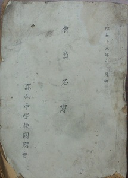
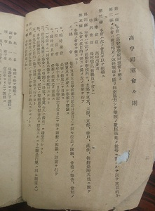

「玉翠会」の名前の由来
ー高中同窓会の名称は「玉藻会」ではなかったー
「玉翠会」の名称は、高中同窓会「玉藻会」と高松高女同窓会「晩翠会」から1字ずつ取ったものと聞かされてきました。実際、玉翠会サイトでもそのような説明がなされています。


ところが、小西武夫先生(昭和5年卒)が「玉翠19号」で「玉翠会」の名称の由来を次のように述べられていました。
「県女理事の方から、『晩翠会』という同窓会名を継承したことが分かるような会名をつけて欲しいとの提案があり、議論百出した。」「そこで、高中同窓会には学校名を冠した同窓会名しかないのであるが、校友会誌として『玉藻』が出されていたので、その一字『玉』と『晩翠』の一字『翠』を合わせて『玉翠』と名付けてはと申し上げた。」
すなわち、「高中同窓会には学校名を冠した同窓会名しかない」「『玉』は校友会誌『玉藻』から取った」と述べているのです。
ちなみに、「玉藻」は在校生の組織である校友会が発行していた冊子であって、同窓会誌ではありません。
それで気になって調べたところ、玉翠会発足時の高高新聞には「去る1月29日、旧高中同窓会と旧県女晩翠会が統合され、玉翠会として発足」とあり、「晩翠会」とは表記していましたが、「玉藻会」とはしていませんでした。
さらに調査すると、昭和15年1月発行の高松中学同窓会の会員名簿が玉翠会館会議室に保存されていました。
その表紙には「会員名簿 高松中学校同窓会」とあり、「玉藻会」の表記はありませんでした。
またその会員名簿には「高中同窓会会則」が掲載されており、第1条には「本会は高松中学校同窓会と称す」と明記していました。
つまり、高松中学校の同窓会の名称は、会則で「高松中学校同窓会」と規定しており、「玉藻会」ではなかったのです。
したがって、「玉藻会」という名称は高松中学校同窓会としては正式には存在せず、「玉翠会」の名前の由来は、校友会誌の表題である「玉藻」と、高松高等女学校同窓会「晩翠会」から一字ずつ取ったというのが事実であろうと思われます。
（ただし、これはこのサイト管理者の個人的見解であり、東京玉翠会の見解ではないことをお断りしておきます。）
資料1
「思い出」 昭和5年高中卒 小西武夫（「玉翠」19号より）
両同窓会の首脳者も学校が一つになったのだから同窓会も一つにした方がよいという考えに殆んど異論がなかったようである。両同窓会の合同理事会が開かれ、この問題が話し合われた時も大した異論は出なかったように記憶している。ただ、同窓会名を何と付けるかについて意見百出したのである。
旧高中理事には、そう会名にこだわる者もいなかったのである。香川県立高松中学校同窓会から、すでに香川県立高松高等学校同窓会に変っていたから、このままでも問題はなかった。
ところが、旧県女理事の方から、「私たちには『晩翠会』という立派な同窓会名があったのだから、なんとかこれを継承したことが分かるような会名をつけて欲しい」ということであった。
結局、この日には決まらず、会名を決めるための理事会が改めて開かれた。
その席上、二三の会名案が出されたが、その日もとうとう決まらず、みんなで会名案を持ちよることにして解散した。
かくして三度新同窓会名案決定のための理事会が校長室で開かれた。学校側から赤羽校長、前川省三先生、山西シゲノ先生、旧高中同窓会から細渓さん、今沢さん外数名、旧県女同窓会から浜田さん、吉本さん外数名の方々が出席されておられたと記憶している。
会が開かれると会名案が幾つか出されたが、全員の賛成を得られなかった。
これまで年少者としてだまって末席に控えていた私にも発言すべき機会がきたと思った。
発言を求め、「会名として『玉翠会』というのは如何なものでしょうか。」と提案した。
提案理由として、高中同窓会には学校名を冠した同窓会名しかないのであるが、校友会誌として「玉藻」が出されていたので、その一字「玉」と「晩翠」の一字「翠」を合わせて「玉翠」と名付けてはと言うことを申し上げた。
同窓会名決定のために三度理事会に召集された旧高中各理事はこれに賛成し、次いで旧県女理事もこの案を呑むに及んで、さしも難航した同窓会名案もここにめでたく決定を見たのである。
かくて、昭和二十五年一月二十九日本校講堂（現図書館、補習科教室）において両同窓会合同総会が開かれ、玉翠会として発足して今日に至っておるのである。
資料2
玉翠会発足（昭和25年2月18日付高高新聞より）
去る1月29日旧高中同窓会と旧県女晩翠会が統合され、玉翠会として発足することになった。この会の今後の活動としては、大きな組織力を以て、本校の学校目的達成の為に協力し、例えば本校に大きな行事がある時、又大きな設備を設ける場合、各方面の折衝に積極的に協力してゆく事となった。
資料3
高中同窓会会則（「昭和15年11月調 高松中学校同窓会会員名簿」より）
| 第一条 | 本会は高松中学校同窓会と称す |
| 第二条 | 本会は会員相互の連絡親睦を図り同窓協力して母校の発展後進の指導に資するを以て其目的とす |
| 第三条 | 本会は左の会員を以て組織す 通常会員 高中出身者 特別会員 母校職員（旧職員を含む） |
| 第四条 | 本会は本部を高松中学校内に、支部を東京、大阪、京都、神戸、満州、朝鮮台湾其他に置く |
| 第五条 | 本会は其目的を達する為め左の事業を行う 一、各種の会合を催すこと イ、総会 毎年5月5日母校創立記念日当日之を開き役員の選挙、会務の報告、会則の変更及び必要なる事項を審議す ロ、臨時総会 必要の都度之を召集す ハ、役員会 毎年十月十一日行啓記念日当日之を開き諸般の審議、計画を行う ニ、臨時役員会 必要の都度之を召集す 二、一年置きに一回役員名簿を作成配布すること 三、会員の死亡判明の場合には弔詞又は弔電、香典（又は献花）を贈呈すること 四、多年勤続職員の表彰、転退職、死亡の際謝恩弔慰金品を贈呈すること（贈呈内規は別に制定す） 五、其他本会の目的に協ふ諸種の事業を行うこと |
| 第六条 | 毎年度の新入会者は本会入会金五円を納入するものとす |
| 第七条 | 本会の役員左の如し 会長 一名 母校々長を推戴す 副会長 一名 通常会員中より之を選任す 理事 若干名 会員中より之を選任す 1 県内 在住会員 十名以内 2 母校 在職会員 若干名 3 県外 在住会員 若干名 右理事の内、県内在住若干名、母校在職会員若干名を常任理事とす 幹事 各年度会員より二名を互選し欠員を生じたる場合には互選補充するものとす |
| 第八条 | 本会の役員は総会に於て公選す（但し便宜上会長之を指名委嘱することを得） |
| 第九条 | 副会長、理事、幹事の任期は満三ヶ年とす但し兼任重任を妨げず |
| 第十条 | 本会役員の任務左の如し 一、会長は本会を統括し会務一切を掌るものとす 二、副会長は会長を補佐し各般の会務を掌るものとす 三、理事は本会の企画、審議、連絡に参与して本会の会務を補佐するものとす 四、常任理事は本会の庶務、会計等の事務を処理するものとす 五、幹事は其同期生の住所身上移動の報告等一切本会との連絡を計り会務を補佐するものとす |
| 第十一条 | 本会の会計年度は毎年四月一日に始り翌年三月三十一日に終わるものとし会計報告は之を会員名簿に掲ぐ |
| 昭和九年五月五日 |